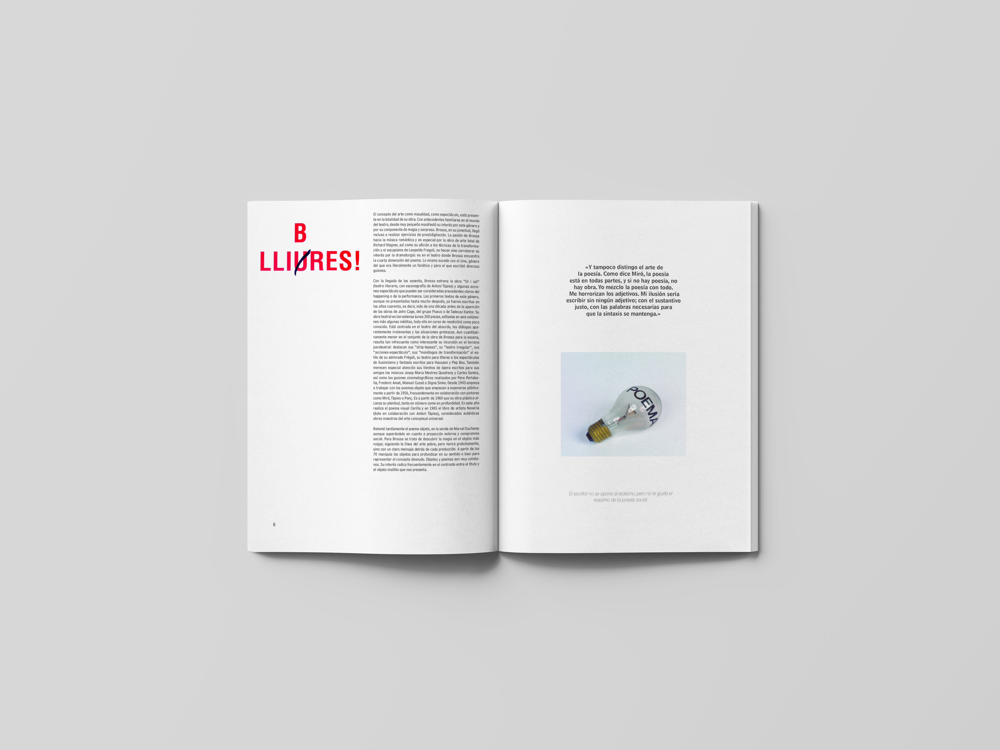
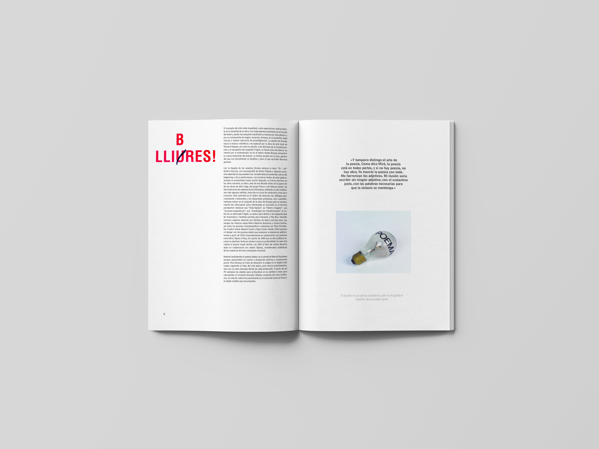

The Scientist, canción y nombre del disco, del grupo Británico Coldplay. Es una edición especial conmemorando el tema, versionado por diferentes artistas. The scientist habla sobre echar de menos. Y se ha representado gráficamente de una forma metafórica.
 
